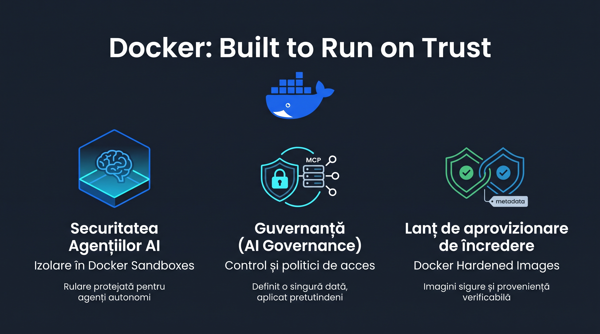

Docker își prezintă noua identitate vizuală și își extinde direcția strategică către securitatea și guvernanța agenților AI

Docker a anunțat o nouă identitate de brand — inclusiv o versiune redesenată a celebrei sale mascote Moby (balena) — marcând extinderea direcției strategice a companiei dincolo de containerele tradiționale, către rularea securizată, izolarea și guvernanța agenților autonomi AI.
1. Motivația schimbării: Diferența dintre containere și agenți AI
Potrivit companiei, repoziționarea pornește de la o diferență fundamentală între aplicațiile containerizate clasice și agenții AI:
Izolare vs. autonomie decizională: În timp ce containerele izolează sarcinile de lucru (workloads), agenții AI iau decizii independente privind comenzile pe care le execută, resursele pe care le accesează și modificările pe care le operează în sistem.
Noi provocări de securitate și guvernanță: Această autonomie introduce riscuri pe care izolarea convențională a containerelor nu le poate acoperi complet. Organizațiile și dezvoltatorii au nevoie de mecanisme dedicate pentru a controla comportamentul agenților, a restricționa accesul la resurse sensibile și a monitoriza acțiunile automatizate.
2. Produse cheie pentru ecosistemul AI și continuitatea containerelor
Pentru a susține această direcție, Docker evidențiază două componente centrale ale portofoliului său:
Docker Sandboxes: Oferă medii de execuție izolate special concepute pentru agenții AI de programare (AI coding agents).
Docker AI Governance: O soluție axată pe aplicarea politicilor de securitate, controlul accesului și supravegherea activităților desfășurate de agenți.
Containerele rămân nucleul platformei: În ciuda accentului pus pe AI, compania subliniază că nu abandonează tehnologia containerelor, aceasta rămânând esențială pentru dezvoltarea software modernă și centrală în produsele sale.
3. Noua identitate vizuală (Moby)
Redesign al logo-ului și al prezenței web: Odată cu actualizarea strategică, Docker a introdus o versiune reîmprospătată a mascotei Moby, menită să reflecte evoluția companiei, păstrând în același timp elementele recognoscibile ale brandului pe site-ul oficial și în materialele corporative.